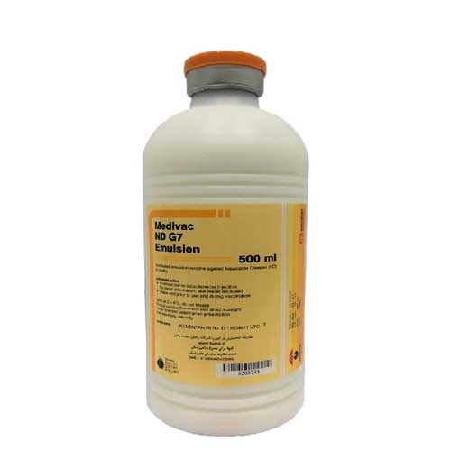

واکسن کشته امولسیون نیوکاسل G7 طیور، مدیاوک
📝مورد مصرف:
در جوجه و مرغ گوشتی، مادر و تخمگذار علیه بیماری نیوکاسل.
📝ترکیب واکسن:
واکسن حاوی ژنوتیپ VII که هر دز دارای حداقل EID₅₀ 10⁷ ویروس نیوکاسل می باشد و در ادجوانت پایه روغنی امولسیفیه شده است.
📝میزان دز و روش مصرف:
میزان تزریق به ازای هر جوجه، ۰/۲ میلی لیتر و در بالغین ۰/۵ میلی لیتر می باشد که بصورت عضلانی (در ناحیه سینه یا ران) یا زیر جلدی (در سطح پایینی پشتی گردن) تزریق می گردد.
📝برنامه واکسیناسیون :
◽️جوجه گوشتی: اولین تزریق در سن ۴ تا ۷ روزگی به همراه واکسن زنده تخفیف حدت یافته نیوکاسل مورد استفاده قرار گیرد.
طیور تخمگذار و مادر: اولین تزریق در سن ۴ تا ۷ روزگی به همراه واکسن زنده تخفیف حدت یافته نیوکاسل مورد استفاده قرار گیرد.
◽️تکرار واکسیناسیون می تواند در سن ۱۶ الی ۱۸ هفتگی یا ۲ هفته قبل از شروع تخمگذاری با تزریق واکسن زنده تخفیف حدت یافته لاسوتا یا واکسن کشته نیوکاسل انجام شود. بطور اختصاصی جهت مرغان مادر، واکسیناسیون در سن ۱۶ الى ۱۸ هفتگی بایستی با واکسن کشته نیوکاسل - برونشیت - گامبورو انجام شود.
◽️در صورتی که واکسیناسیون در سن ۱۶ الی ۱۸ هفتگی با واکسن های زنده تخفیف حدت یافته انجام شود، واکسیناسیون بعدی بایستی ۲ تا ۳ ماه بعد انجام پذیرد.
◽️در صورتی که واکسیناسیون در سن ۱۶ الی ۱۸ هفتگی با واکسن های کشته انجام شود، واکسیناسیون بعدی بایستی ۳ الى ۶ ماه بعد انجام شود. و در دوران تخمگذاری مرغان مادر و تخمگذار بایستی علیه نیوکاسل مجددا واکسینه شوند. لذا با پایش تیتر آنتی بادی علیه نیوکاسل می توان زمان دقیق واکسیناسیون را مشخص نمود.
🔹این یک برنامه عمومی است و لذا زمان واکسیناسیون می تواند بنا به ش رایط خاص و با توصیه سازمان دامپزشکی تغییر نماید.
📝احتیاطات مصرف:
◽️در صورت ترک داشتن و یا شکسته بودن ویال، از مصرف آن خودداری گردد.
◽️از واکسیناسیون طیور بیمار و دچار نقص ایمنی خودداری شود؛ زیرا نمی توانند به حداکثر تیتر ایمنی پس از واکسیناسیون نائل شوند.
◽️از قرار دادن ویال واکسن در برابر نور مستقیم خورشید یا حرارت خودداری نمایید.
◽️درب ویال را تنها پیش از آغاز واکسیناسیون باز کرده و محتویات آنرا ظرف مدت حداکثر ۲۴ ساعت مصرف نمایید.
◽️پیش از آغاز واکسیناسیون می بایست سرنگ مورد استفاده را پس از تفکیک اجزا آن، به مدت ۳۰ دقیقه در آب جوش، قرار داد. و قبل از تزریق واکسن و بمنظور تنظیم درجه حرارت آن با دمای سالن، ویال واکسن را مدتی در کف دست نگهدارید تا سرمای آن رفع شود.
◽️ویال حاوی واکسن را پیش از واکسیناسیون و در طول عملیات واکسیناسیون بصورت مکرر تکان دهید.
◽️پس از اتمام واکسیناسیون دستها را بخوبی شسته و ضدعفونی نمایید.
◽️ویال های خالی و یا ویال هایی که درب آنها باز شده ولی بطور کامل مصرف نشده اند را پیش از معدوم سازی بایستی سوزاند یا به مدت ۳۰ دقیقه در آب جوش یا ماده ضدعفونی کننده غوطه ور نمود.
◽️در صورت تزریق اتفاقی واکسن به خود، همراه با بروشور واکسن به پزشک مراجعه نموده و او را از ترکیب واکسن مطلع سازید.
📝شرایط نگهداری:
در دمای ۲ تا ۸ درجه سانتیگراد و دور از نور خورشید نگهداری شود.
📝بسته بندی:
واکسن در ویال های ۲۵۰ و ۵۰۰ میلی لیتری عرضه شده است. عمر قفسه ای: ۱۸ ماه پس از تاریخ تولید، در صورت نگهداری تحت شرایط توصیه شده.